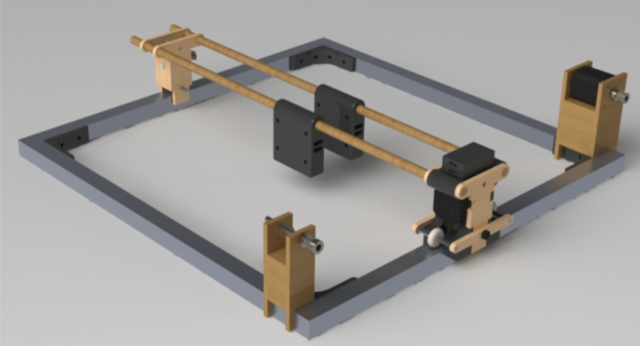
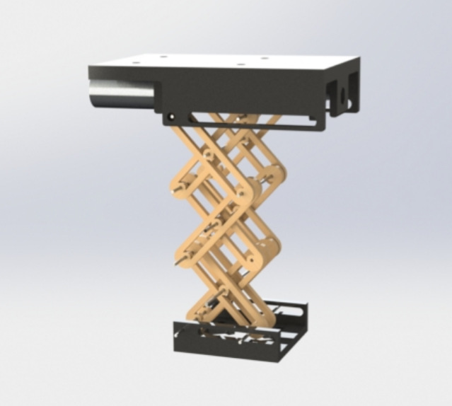
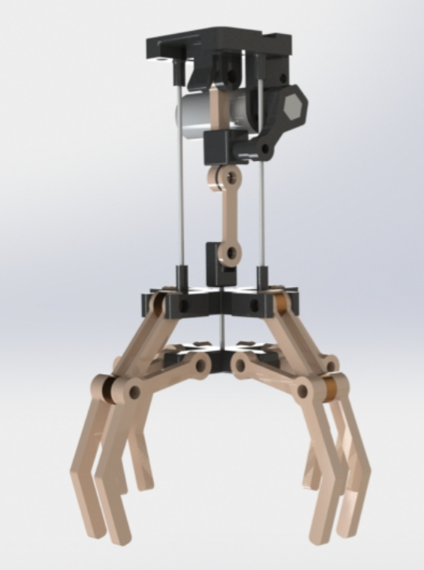
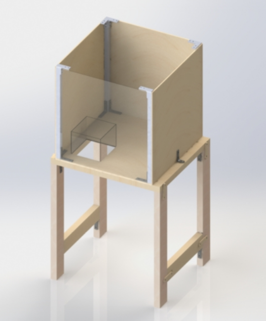

Mechanical Design Analysis
Gantry
The Gantry is a two-axis system that sits at the top of the housing in a 2ft x 2ft square. It is run by 2 stepper motors that each drive a belt system on its respective axis that moves a bracket that then moves the whole system on that axis. Each axis is driven as close to the weight as possible to avoid creating large moment arms that would require a lot of torque to move. Initially, the two axes were controlled by one stepper motor to avoid synchronization issues between stepper motors. In the end, we needed to add an auxiliary stepper motor on the x-axis to help it move more smoothly.
The x-axis of the gantry runs along 80/20 Aluminum Bars using wheels to stay in the channel of the bars and roll along. The y-axis of the gantry slides along two wooden rods running parallel to each other. The rest of the gantry consists mostly of ¼ in thick MDF, 15% Infill 3D printed PLA and ¼ in aluminum dowels. Both of these systems are connected by housings on each side that secure the driving bracket of the x-axis to the ends of the wooden dowels and (in the case of one side) secure the y-axis motor in place. The Elevator connects to the gantry using the brackets on the y-axis and attaches to those brackets using 4 bolts.
Elevator
The scissor elevator actuation is through a 12V DC motor which is bolted to the top of the elevator. The motor spins a thread which moves one leg of the “x”. The elevator consists of three “x” mechanisms each double enforces - hence 4 “legs” per x and 12 total. At the top one side of the x is retained in place while the other is attached through an intermediary 3D printed piece with an inserted nut attached to the thread. This allows the elevator to open and retract downwards. The other x configurations move thanks to linkages and retaining rings. The bottom uses a similar concept to the top where one leg of the x is stationary, and one is able to move allowing the opening and retraction vital to a scissor lift mechanism. This bottom piece also attaches to the claw while the top attaches to the gantry system.
Claw
The claw’s actuation is powered by an 12V DC motor that drives a crank-and-slider mechanism that connects to 4 separate sets of linkages serving as the “fingers.” The mechanism is attached to the elevator system via 4 matching bolt holes for bolts and nuts to be screwed in. Most of the claw is made up of laser cut MDF and 15% infill 3D print in an attempt to make the assembly cheap and light. And, to ensure the crank mechanism in the middle slides smoothly, each sliding joint was designed to follow the 3:1 rule, where the guide rail lengths were more than 3 times the diameter of the rods’ diameters. In addition, all the rotary joints are supported by sleeve bearings sitting on 8-32 bolts to minimize the friction, allowing the usage of a less powerful, lighter motor.
Housing
The housing consists of several pieces of plywood, wooden 2 by 4s, metal 1” extrusions, a few straight brackets and so many L-brackets. The base structure is held together primarily by wood screws. The 2 bars on the legs were added to give the structure more stability. We also added on caster wheels, so it could be easily transported from the MAC to the library when needed. The metal extrustions can be used to attach the gantry via more L brackets.